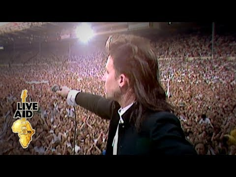

Tempo: 04:59
Em uma apresentação exclusiva no icônico Abbey Road Studios em Londres, Adam, Bono, Edge e Larry tocam o clássico With Or Without You acompanhado por uma orquestra para o U2 At The BBC - um programa especial para a BBC One.
Assistir no YoutubeTempo: 11:35
O U2 se apresentando no Live Aid para 72.000 pessoas no Estádio de Wembley, Londres, em 13 de julho de 1985. O evento foi organizado por Sir Bob Geldof e Midge Ure para arrecadar fundos para o desastre da fome na Etiópia. Transmitidos para todo o mundo através de uma das maiores conexões via satélite de todos os tempos, os shows foram vistos por cerca de 40% da população global.
Assistir no YoutubeTempo: 05:11
Em uma apresentação exclusiva no icônico Abbey Road Studios em Londres, Adam, Bono, Edge e Larry tocam um de seus maiores sucessos, acompanhados por uma orquestra e coro para o U2 At The BBC - um programa especial para a BBC One.
Assistir no YoutubeTempo: 03:43
O U2 se apresentou no Live 8 no Hyde Park de Londres em 2 de julho de 2005. Organizado por Sir Bob Geldof e The Band Aid Trust para arrecadar dinheiro para combater a pobreza em todo o mundo, o evento foi assistido por cerca de 2 bilhões de pessoas.
Assistir no YoutubeTempo: 06:11
Rattle and Hum é o sexto álbum de estúdio da banda irlandesa U2. Foi lançado em 10 de outubro de 1988, sendo lançado no mesmo ano também, o documentário. "Where the Streets Have No Name" é uma canção da banda de rock irlandesa U2. É a faixa de abertura do álbum The Joshua Tree (1987), e foi lançado como o terceiro single em 1 de agosto de 1987
Assistir no YoutubeTempo: 05:44
Edição de várias câmeras desta faixa do show do U2 em 12 de maio de 2017 em BC Place, Vancouver, na noite de abertura da The Joshua Tree Tour 2017.
Assistir no YoutubeDesenvolvido por Natalia Santos e José Teles ©
| Conheça o projeto